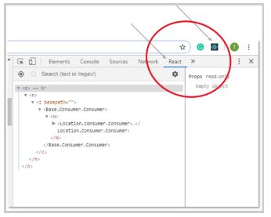

RSSchool, 2021, Q1
REACT JS Basics
Main topics
- What is React?
- Why React?
- Features of React
- React Pre-requisities
- Industry Trends
What is React?

React is a JavaScript library created for building fast and interactive user interfaces for web and mobile applications.
It is an open-source, component-based, front-end library responsible only for the application’s view layer.
In Model View Controller (MVC) architecture, the view layer is responsible for how the app looks and feels.
Why is React?
Why React?
Features of React
JSX - JavaScript Syntax Extension
const name = 'angietune';
const greet = Hello, {name}
;
Virtual DOM
What is the Document Object Model (DOM)?

Performance
Extensions
One-way Data Binding
Debugging
Components, State, and Props
Components
Components
function Greeting(props) {
return Welcome to {props.name}
;
}
class Greeting extends React.Component {
render() {
return Welcome to {this.props.name}
;
}
}State
class Greetings extends React.Component {
state = {
name: "World"
};
updateName() {
this.setState({ name: "Simplilearn" });
}
render() {
return(
{this.state.name}
)
}
}
Props
- Passing props to other components: carProp, bikeProp
- Accessing props passed to a component: this.prop.carProp, this.props.bikeProp
ReactJS Prerequisites
- Programming concepts like functions, objects, arrays, and to a lesser extent, classes
- Basic knowledge of JavaScript
- Some familiarity with HTML
Industry Trends
React developers earn more money in comparison to other web development technologies. Due to the fast rendering of React applications, more and more companies are adopting this development tool, and this has subsequently led to a higher demand for React developers all around the world.

React has been consistently gaining popularity since it was released, and, as the following Google trends chart shows, there’s no sign of it slowing down. Facebook keeps adding features to React, making it increasingly more potent over time. It is safe to assume that React is here to stay.